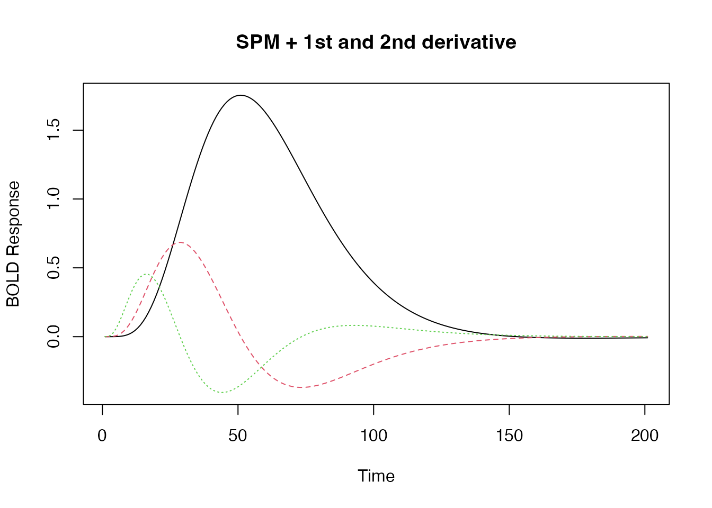

Hemodynamic Response Functions
Bradley R. Buchsbaum
2019-09-29
Source:vignettes/a_01_hemodynamic_response.Rmd
a_01_hemodynamic_response.RmdHemodynamic response function
A hemodynamic response function (HRF) is used to model the temporal evoluation of an fMRI response to an experimental “event”. An HRF is a function of time and usually peaks 4-6s afer the event onset.
There are a number of pre-defined HRFs in fmrireg that make it easy to work with them. For example, we can use the SPM “canonical” HRF. We use the function hrf_blocked which can generate flexible hemodynamic responses.
library(magrittr)
## SPM canonical hrf
f1 <- hrf_blocked(hrf_spmg1, width=0)
## Gaussian hrf with default parameters (mean=6, sd=1.5)
f2 <- hrf_blocked(hrf_gaussian, width=0)
plot(seq(0,20,by=.1), f1(seq(0,20,by=.1)), type="l", xlab="Time", ylab="BOLD response", main="Gaussian and SPM Canonical HRF", ylim=c(-.1, .3))
lines(seq(0,20,by=.1), f2(seq(0,20,by=.1)), type="l", col=2)
In the above, the “width” parameters tells the hrf_block function that the event is “instantaneous”, i.e. that it is not extended in time. This is the standard way of modeling short-lasting (e.g. < 2 seconds) in fMRI.
Changing Default Parameters
Standard HRF functions have default parameters that determine the shape of the response. For the Gaussian HRF, these parameters are easy to understand. The mean specifies the “peak” of the HRF and the sd parameter specifies its “width”.
## the 'gen_hrf' function takes an hrf function and returns a new function substituting the supplied parameters as arguments.
hrf_7_3 <- gen_hrf(hrf_gaussian, mean=7, sd=3)
hrf_5_2 <- gen_hrf(hrf_gaussian, mean=5, sd=2)
hrf_4_1 <- gen_hrf(hrf_gaussian, mean=4, sd=1)
time <- seq(0,20,by=.1)
vals1 <- hrf_7_3(time)
vals2 <- hrf_5_2(time)
vals3 <- hrf_4_1(time)
## notice that that each function is scaled so that it's highest value = 1.
plot(seq(0,20,by=.1), vals1, type="l", xlab="Time", ylab="BOLD response", ylim=range(c(vals1, vals2, vals3)), main="Three Gaussian HRFs with different parameters")
lines(seq(0,20,by=.1), vals2, type="l", col=2)
lines(seq(0,20,by=.1), vals3, type="l", col=3)
Setting the duration of a response
We can also set the duration of the input stimulus as follows:
hrf_w1 <- hrf_blocked(hrf_spmg1, width=1)
hrf_w2 <- hrf_blocked(hrf_spmg1, width=2)
hrf_w3 <- hrf_blocked(hrf_spmg1, width=3)
time <- seq(0,20,by=.1)
plot(time, hrf_w1(time), type="l", xlab="Time", ylab="BOLD response", ylim=range(0, 6), main="HRFs with Different Durations")
lines(time, hrf_w2(time), type="l", col=2)
lines(time, hrf_w3(time), type="l", col=3)
We can also require that the HRFs be normalized so that, regardless of the block duration, the peak amplitude of the HRF = 1.
hrf_w1 <- hrf_blocked(hrf_spmg1, width=1, normalize=TRUE)
hrf_w2 <- hrf_blocked(hrf_spmg1, width=2, normalize=TRUE)
hrf_w3 <- hrf_blocked(hrf_spmg1, width=3, normalize=TRUE)
plot(time, hrf_w1(time), type="l", xlab="Time", ylab="BOLD response", ylim=range(-.2, 1.2), main="HRFs with Different Durations, but normalized")
lines(time, hrf_w2(time), type="l", col=2)
lines(time, hrf_w3(time), type="l", col=3)
Modeling HRF saturation with the summation argument
By default an increase in the duration results in the summation of a series of shifted responses, which is consistent with the notion that the hemodyamic response “adds up” or accumulates over time. But we can disable this additive behavior by setting summate=FALSE. This is useful if one assumes the HRF “saturates” (i..e does not increase in amplitude) with extended stimulation.
hrf_w1 <- hrf_blocked(hrf_spmg1, width=2, summate=FALSE)
hrf_w2 <- hrf_blocked(hrf_spmg1, width=4, summate=FALSE)
hrf_w3 <- hrf_blocked(hrf_spmg1, width=6, summate=FALSE)
time <- seq(0,24,by=.1)
plot(time, hrf_w1(time), type="l", xlab="Time", ylab="BOLD response", ylim=c(-.1,.25), main="Non-Summating HRFs with Different Durations ")
lines(time, hrf_w2(time), type="l", col=2)
lines(time, hrf_w3(time), type="l", col=3)If we want the peak of the HRF to equal 1, we use the normalize argument as follows:
hrf_w1 <- hrf_blocked(hrf_spmg1, width=2, summate=FALSE, normalize=TRUE)
hrf_w2 <- hrf_blocked(hrf_spmg1, width=4, summate=FALSE, normalize=TRUE)
hrf_w3 <- hrf_blocked(hrf_spmg1, width=6, summate=FALSE, normalize=TRUE)
time <- seq(0,24,by=.1)
plot(time, hrf_w1(time), type="l", xlab="Time", ylab="BOLD response", ylim=c(-.1,1.1), main="Normalized and Non-Summating HRFs with Different Durations ")
lines(time, hrf_w2(time), type="l", col=2)
lines(time, hrf_w3(time), type="l", col=3)
Multivariate HRF: B-splines and Derivatives
Sometimes we want to model an event with multiple “basis functions”. In this case the HRF is a function from time -> d-dimensional vector, where d is the dimension of the basis set.
## A third degree B-Spline with four bases.
hrf_bs_4 <- gen_hrf(hrf_bspline, N=4)
time <- seq(0,20, by=.1)
bmat1 <- hrf_bs_4(time)
matplot(time, bmat1, xlab="Time", ylab="BOLD Response", type='l', main="Bspline HRF basis set (N=4)")
## A first degree B-Spline with 12 bases.
hrf_bs_12 <- gen_hrf(hrf_bspline, degree=1, N=12)
bmat1 <- hrf_bs_12(time)
matplot(time, bmat1, xlab="Time", ylab="BOLD Response", type='l', main="Bspline HRF basis set (N=12)")
## the SPM + first derivative is a "built-in" HRF function.
bmat1 <- HRF_SPMG2(time)
matplot(time, bmat1, xlab="Time", ylab="BOLD Response", type='l', main="SPM + first derivative")
## the SPM + first derivative + second derivative is a "built-in" HRF function.
bmat1 <- HRF_SPMG3(time)
matplot(bmat1, xlab="Time", ylab="BOLD Response", type='l', main="SPM + 1st and 2nd derivative")
Creating “lagged” and “blocked” HRFs
In some cases, it might be useful to create an HRF function that has a temporal offset (a “lag” or “delay”). We might also want to create an HRF that has a fixed width or duration that is larger than zero. Below are examples of suched lagged and blocked HRFs.
## constructing a series of lagged HRFs
hrf_lag_1 <- hrf_gaussian %>% gen_hrf_lagged(1)
hrf_lag_3 <- hrf_gaussian %>% gen_hrf_lagged(3)
hrf_lag_5 <- hrf_gaussian %>% gen_hrf_lagged(5)
time <- seq(0,22,by=.2)
plot(time, hrf_lag_1(time), type='l', xlab="time", ylab="BOLD")
lines(time, hrf_lag_3(time), col=2)
lines(time, hrf_lag_5(time), col=3)## constructing lagged and blocked HRFs
hrf_block_1 <- hrf_gaussian %>% hrf_lagged(1) %>% hrf_blocked(width=1, normalize=TRUE)
hrf_block_3 <- hrf_gaussian %>% hrf_lagged(3) %>% hrf_blocked(width=3, normalize=TRUE)
hrf_block_5 <- hrf_gaussian %>% hrf_lagged(5) %>% hrf_blocked(width=5, normalize=TRUE)
plot(time, hrf_block_1(time), type='l', xlab="time", ylab="BOLD")
lines(time, hrf_block_3(time), col=2)
lines(time, hrf_block_5(time), col=3)Constructing a custom basis set using a set of lagged HRFs
Rather than using a b-spline basis set, we could construct our own set of functions using a combination of lagged and/or blocked HRFs. Suppose we want a series of shifted regressor functions that span a 20s window. We can use a set of shifted hrfs to achieve this.
hrf_set <- do.call(gen_hrf_set,
lapply(seq(0,20,by=2), function(i) { hrf_gaussian %>% hrf_lagged(i) }))
matplot(hrf_set(0:36), type='l', xlab="Time", ylab="BOLD Activity")
Creating an “empirical” HRF from a measured hemodynamic respose
Suppose you have measured a hemodynamic response and what like to use that as a response model for further analyses? In this case you can use the function gen_empirical_hrf to create a hemodynamic response function. Below we extract our model by averaging over several simulated response profiles.
mat <- replicate(20, {
h <- hrf_spmg1 %>% hrf_lagged(lag=runif(n=1, min=-2, max=2)) %>% hrf_blocked(width=runif(n=1, min=0, max=4))
h(0:24)
})
profile <- rowMeans(mat)
emp_hrf <- gen_empirical_hrf(0:24, profile)
plot(seq(0, 24, by=.1), emp_hrf(seq(0, 24, by=.1)), type='l', xlab="time", ylab="response", main="Empircal HRF")
We can also create a set of empirical basis functions using, for example, principal components analysis of a set of HRFs with plausible parameters for lag and width. Here we will simulate 50 HRFs and take the first 3 principal components as our basis set.
mat <- replicate(50, {
h <- hrf_spmg1 %>% hrf_lagged(lag=runif(n=1, min=-2, max=2)) %>% hrf_blocked(width=runif(n=1, min=0, max=2))
h(0:24)
})
matplot(mat, type='l', ylab="response", xlab="Time")
Now we perform PCA pn the matrix of simulated responses and use the components as a basis set. The resulting function emp_hrf_basis can subsequently be used in regression modelling like any of the built-in hemodynamic response functions.
pcs <- prcomp(mat)$x[,1:3]
pcs <- apply(pcs, 2, function(x) x - x[1])
pcs_hrfs <- apply(pcs, 2, function(x) gen_empirical_hrf(0:24, x/max(abs(x))))
emp_hrf_basis <- gen_hrf_set(pcs_hrfs$PC1,pcs_hrfs$PC2,pcs_hrfs$PC3 )
matplot(0:24, emp_hrf_basis(0:24), type='l', ylab="Response", xlab="Time", main="PCA basis functions")